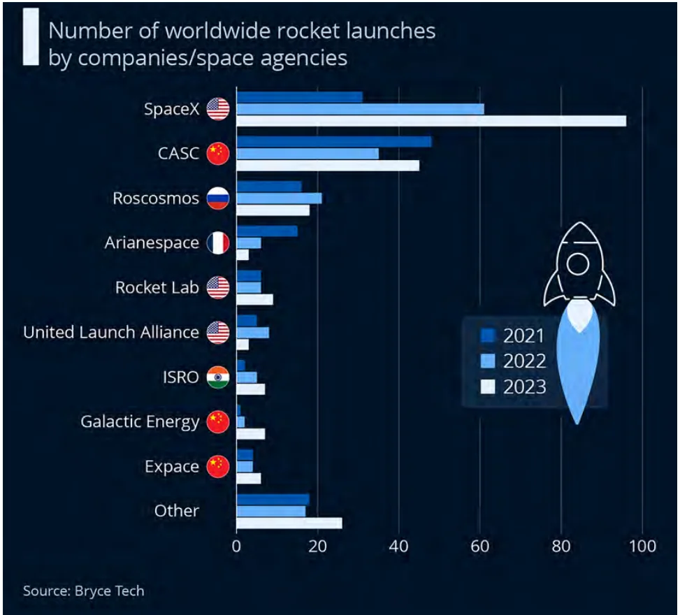
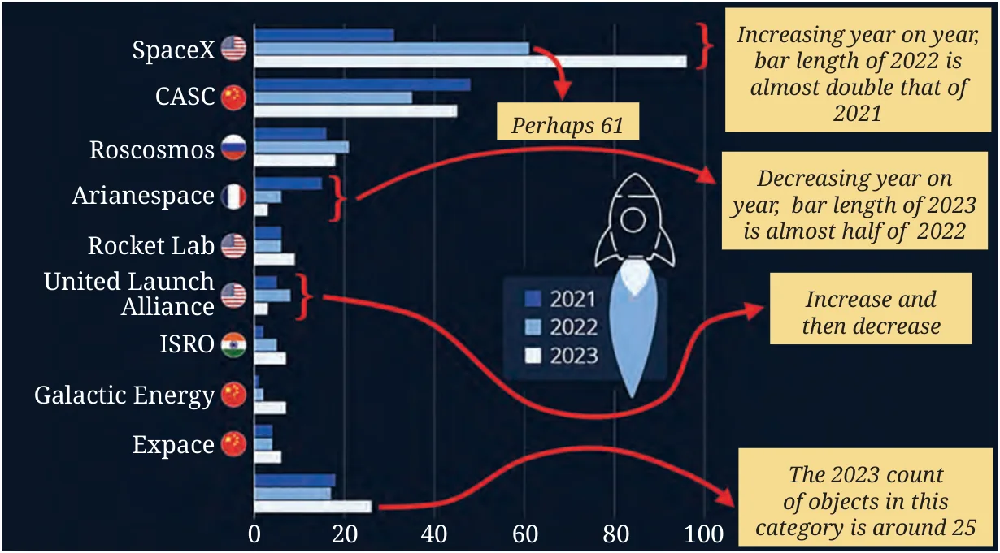

You might have heard about scientific probes (like Chandrayaan-3 launched in 2023 by ISRO or the Voyager-1 launched in 1977 by NASA), observational satellites (like Aryabhata launched in 1975 by ISRO or Sputnik-1 launched in 1957 by the Soviet Space program), or about human spaceflights to the International Space Station. All space missions are launched using rockets. Look at the graph below showing the number of worldwide rocket launches by different organisations.
Share your observations (you may take the teacher's help to identify the countries these organisations belong to).

Source: https://www.statista.com/chart/29410/number-of-worldwide-rocket-launches-by-companies-and-space-agencies/
Often there is a lot of information in graphs and it may be difficult to understand. We can follow a 2-step process to simplify making sense of the data in graphs.
I wish they had shown guidelines for 5, 10, and 15 along the horizontal line. It would help in estimating the smaller numbers.
Step 1: Identify what is given
Notice how the graph is organised, what scale is used, and what patterns the data shows.
- For each organisation, the numbers of rocket launches for the years 2021, 2022, and 2023 are shown as three adjacent bars. The scale used is 1 unit length \(= 20\) rockets. Notice the numbers at the bottom.
- The ‘Others’ category indicates multiple organisations worldwide that are clubbed together to keep the graph short.
- Note that in the double bar graph of onion prices, the months are shown in order, i.e., January to December, to observe the change over time, whereas in this case, a change in the order of organisations does not affect the meaning.

Step 2: Infer from what is given
Analyse and interpret each of your observations.
- We can say that the USA, China, and Russia are the leading rocket launching countries in the given time period.
- SpaceX launched about twice the number of rockets in 2022 compared to 2021. And it launched about 35 more rockets in 2023 compared to 2022.
- The number of rockets launched by Arianespace decreased every year.
- United Launch Alliance launched more rockets in 2022 than in 2021. They launched fewer rockets in 2023 than in both the years 2022 and 2021.
- Other organisations launched about 25 rockets in 2023.
Identify which of the following statements can be justified using this data.
- All organisations launched more rockets than the previous years.
- Only an organisation from the USA launched more than 50 rockets in a single year.
- The total number of rockets launched by France in all 3 years is less than 40.
- The average number of rockets launched by CASC in these 3 years is around 40.
- ISRO launched more rockets than Galactic Energy in these 3 years.
- Russia launched more than 60 rockets in these 3 years.
List the organisations that have consistently launched more rockets every year.
Estimate the total number of rockets launched worldwide in 2023.
- less than 200
- 200 to 400
- 400 to 600
- more than 600
We may have many questions after looking at the graph. We might wonder why USA launches so many more rockets than other countries. Or we might be eager to look at the data from previous and later years. What are you curious to know after looking at this graph?